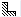
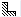
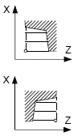

Parameter | Beschreibung | Einheit |
|---|
TC  | Name des Schwenkdatensatzes Hinweis: Das Auswahlfeld ist nur vorhanden, wenn mehrere Schwenkdatensätze eingerichtet sind. | |
Freifahren (bei ShopMill-Programm)
| nein | Vor dem Schwenken wird nicht Freigefahren | |
 | Freifahren in Richtung der Maschinenachse Z | |
 | Freifahren in Richtung der Maschinenachse Z und dann in Richtung X, Y | |
 | Maximales Freifahren (bis Softwareendlage) in Werkzeugrichtung | |
 | Inkrementales Freifahren (angegebener Freifahrweg, bis maximal Softwareendlage) in Werkzeugrichtung | |
Bei Freifahren in Werkzeugrichtung können im geschwenkten Zustand der Maschine mehrere Achsen verfahren. | |
ZR (bei ShopMill-Programm) | Freifahrweg - nur bei Freifahren inkremental in Werkzeugrichtung | |
Werkzeug über Beta- und Gammawinkel ausrichten |
β (bei ShopMill-Programm)
| Werkzeug mit Schwenkachsen ausrichten   | Grad |
γ (bei ShopMill-Programm)
| | Grad |
Rundachsen direkt positionieren |
B1 (bei ShopMill-Programm) | Werkzeug mit Schwenkachsen direkt ausrichten: Freie Eingabe des gewünschten Winkels | Grad |
C1 (bei ShopMill-Programm) | Freie Eingabe des gewünschten Winkels | Grad |
αC (bei ShopMill-Programm) | Drehposition bei einer Polstellung | Grad |
Hirth-Verzahnung (bei ShopMill-Programm)
| Hinweis: Bei Maschinen mit Hirth-Verzahnung | |
Werkzeug
| Werkzeugspitze beim Schwenken | |
Vorzugsrichtung (bei ShopMill-Programm)
| Vorzugsrichtung der Schwenkachse bei mehreren möglichen Ausrichtungen der Maschine   | |
Bearbeitung
| ∇ (Schruppen) ∇∇∇ (Schlichten)
| |
Lage
| Abspanlage:     | |
Bearbeitungs-
richtung
| Abspanrichtung (Plan oder Längs) im Koordinatensystem | |
parallel zur Z-Achse (Längs) | Parallel zur X-Achse (Plan) | |
außen  | innen  | außen  | innen  | |
X0 | Bezugspunkt in X ∅ (abs, immer Durchmesser) | mm |
Z0 | Bezugspunkt in Z (abs) | mm |
X1 | Endpunkt X (abs) oder Endpunkt X bezogen auf X0 (ink) | mm |
Z1 | Endpunkt Z ∅ (abs) oder Endpunkt Z bezogen auf Z0 (ink) | mm |
D | Maximale Tiefenzustellung – (nicht bei Schlichten) | mm |
UX | Schlichtaufmaß in X– (nicht bei Schlichten) | mm |
UZ | Schlichtaufmaß in Z– (nicht bei Schlichten) | mm |
FS1...FS3 oder R1...R3 | Fasenbreite (FS1...FS3) oder Verrundungsradius (R1...R3) - (nicht bei
Abspanen 1) | mm |
| Parameterauswahl Zwischenpunkt Der Zwischenpunkt kann durch Positionsangabe oder Winkel bestimmt werden. Folgende Kombinationen sind möglich - (nicht bei Abspanen 1 und 2) XM ZM XM α1 XM α2 α1 ZM α2 ZM α1 α2
| |
XM | Zwischenpunkt X ∅ (abs) oder Zwischenpunkt X bezogen auf X0 (ink) | mm |
ZM | Zwischenpunkt Z (abs oder ink) | mm |
α1 | Winkel der 1. Kante | Grad |
α2 | Winkel der 2. Kante | Grad |